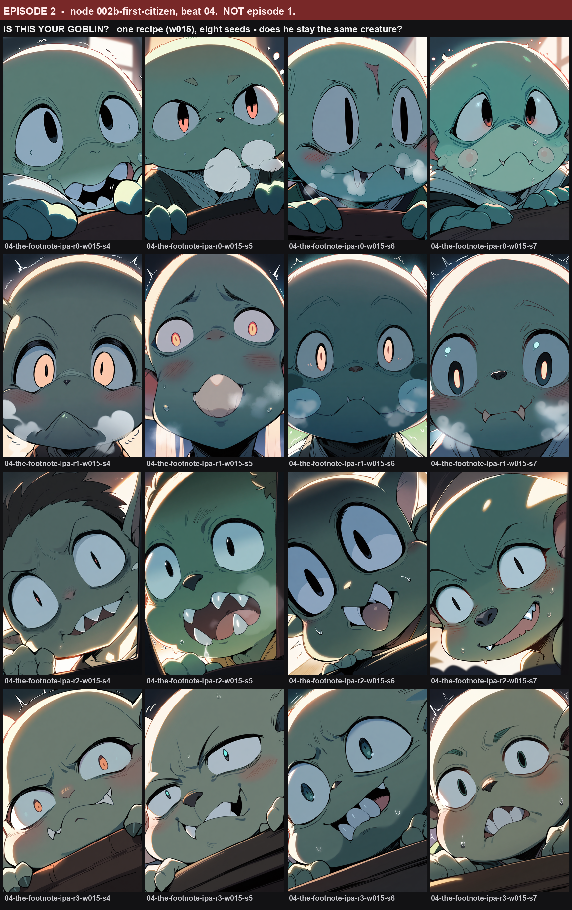
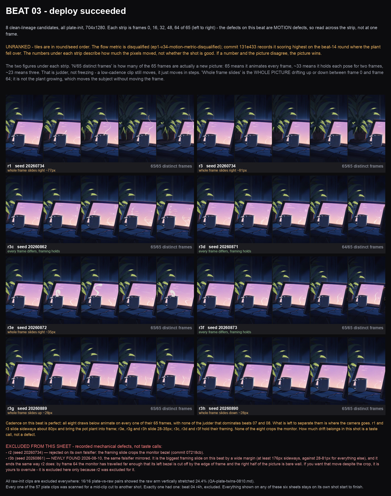
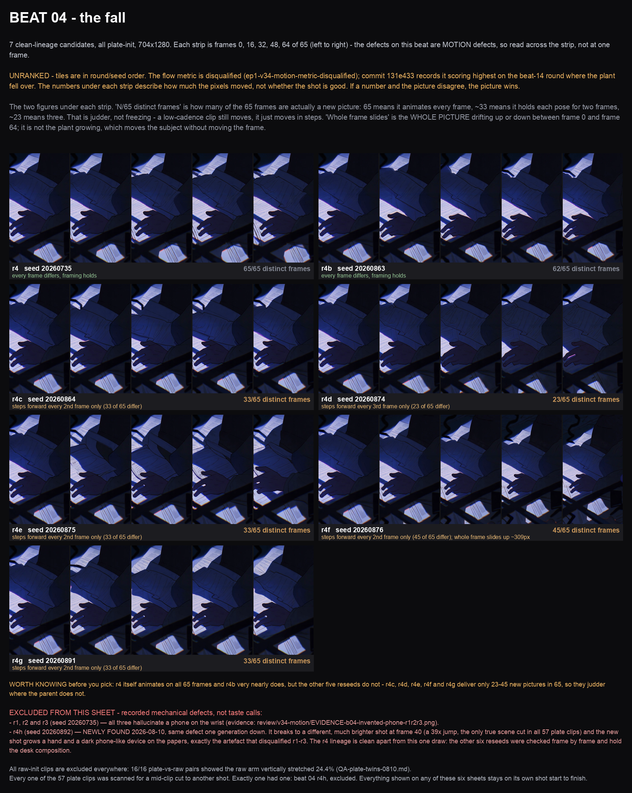
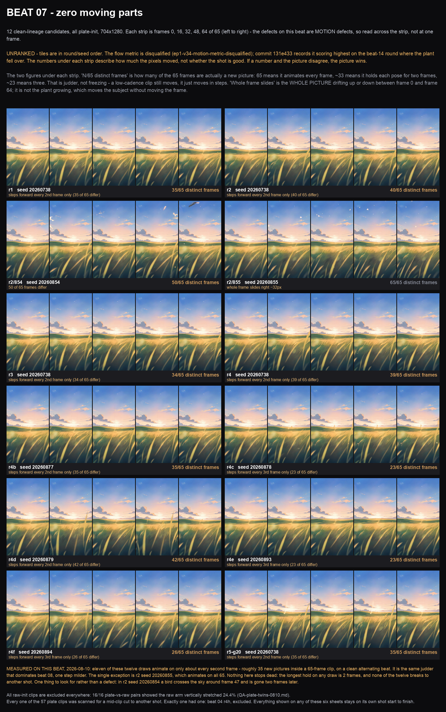
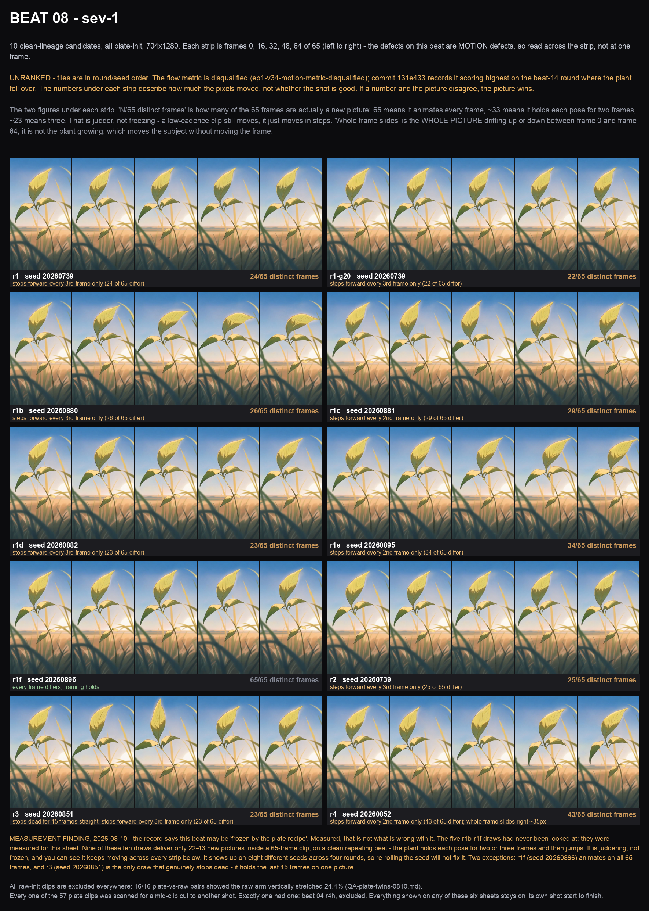
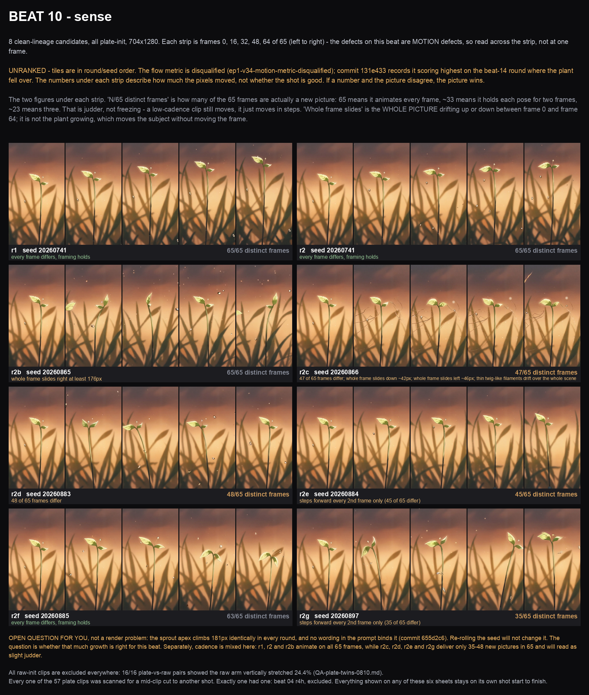
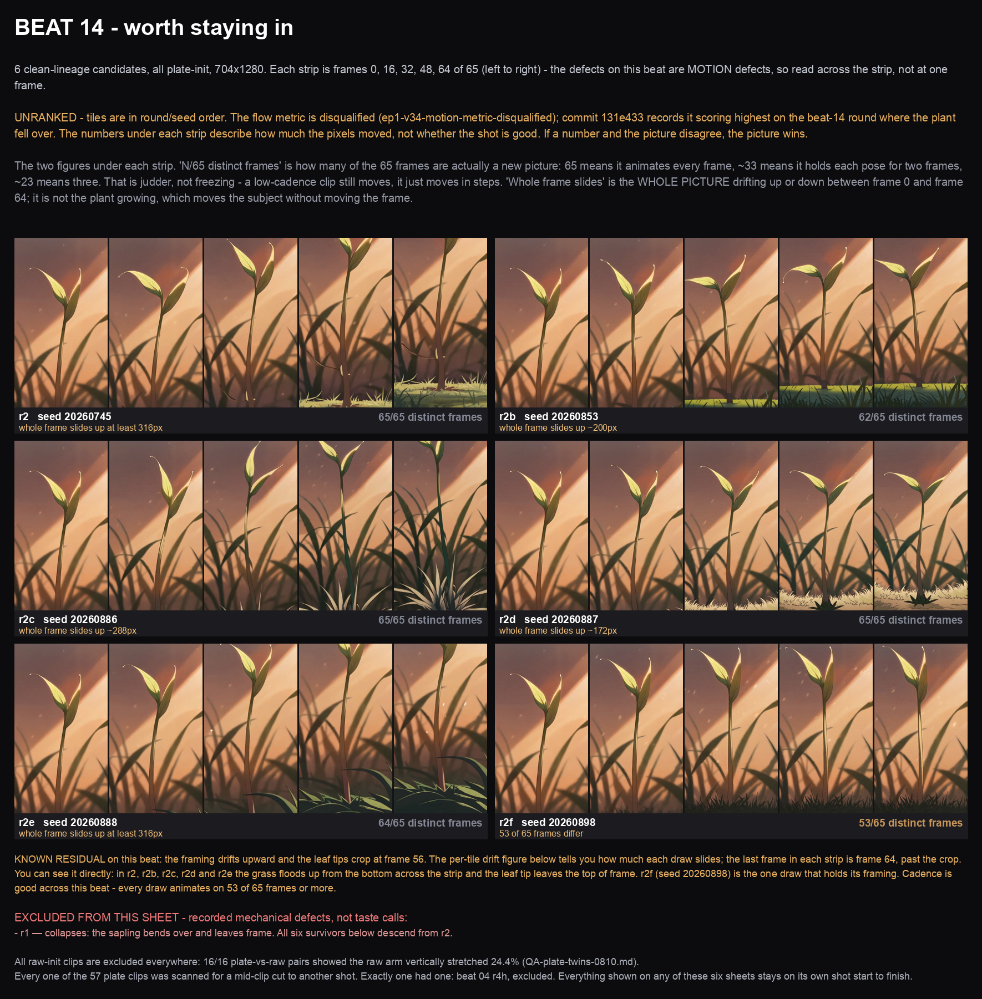
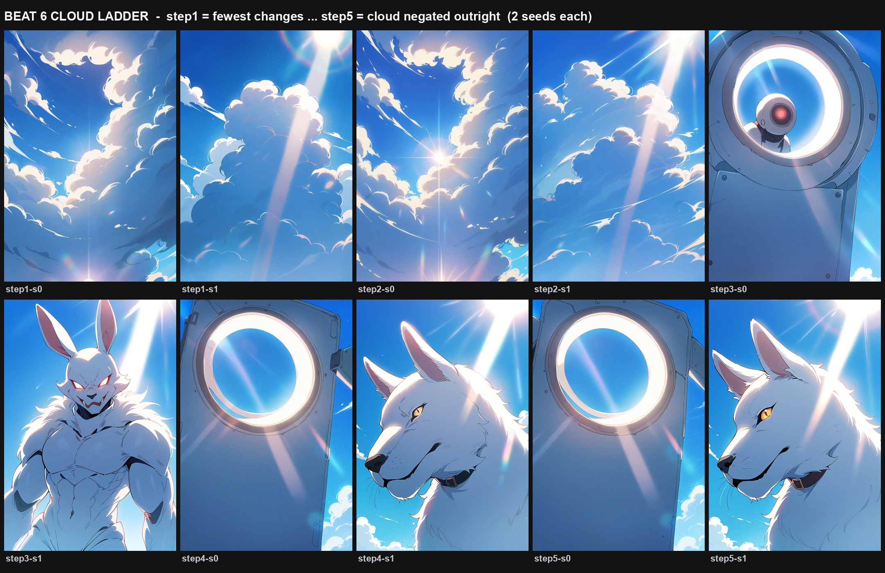
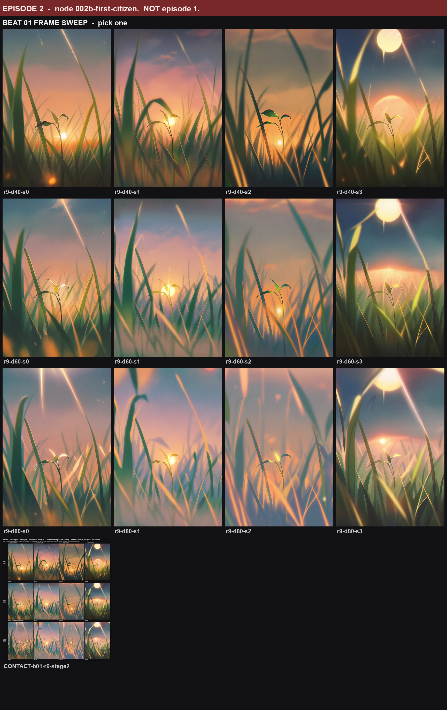

The pictures behind the questions on the waiting list. Nothing here is ranked — broken candidates were removed for mechanical faults, never for taste.
One recipe, eight seeds. Does he stay the same creature?




Juddering rather than frozen — it animates on twos and threes.

The sprout apex climbs 181px in every round; no wording binds it.

Framing drifts up and leaf tips crop at frame 56 in five of six. r2f holds its framing.

Steps 1–2 are real sky. Steps 3–5 are the wolf and the metal ring — a broken recipe, kept as evidence. You chose the repaired step 3.

